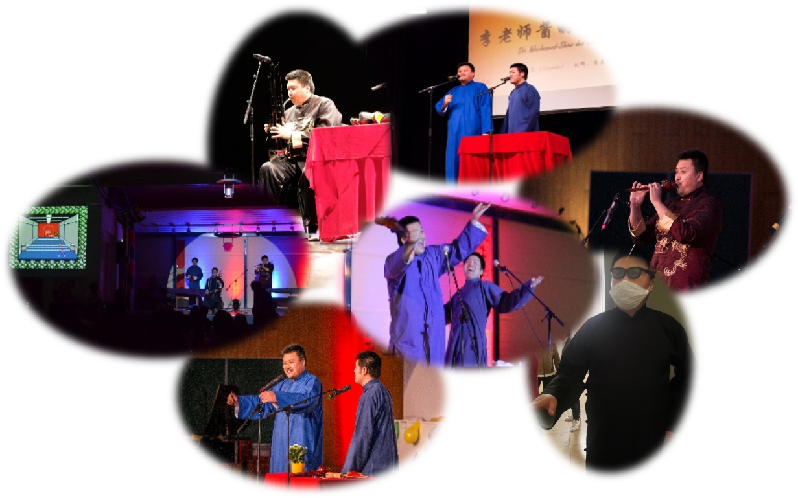
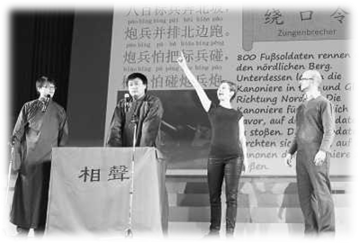

Artistic Activities
| In Progress | |
|
● International Association of Story-Telling and Story-Singing Art Asbl (IASA) Luxembourg |
Director |
|
● Association of German Chinese Story-Telling and Story-Singing Artists (DCDK, Verein der Deutsch-Chinesische darstellender Künstler) Germany |
Chairman |
| ● German Chinese Folk Music Club Germany |
Initiator; Conductor; Composer, Arranger & Adaptor |
| Previous Contributions | |
| ● The 3rd and 6th Konfuzius European Drama Festival for University Students Konfuzius-Institut Frankfurt am Main, Germany |
Judge; Stage Performance Lecturer |
|
● Chinese Academic Choir Berlin (Chinesischer Akademikerchor Berlin) Berlin, Germany |
Impromptu Accompanist; Lyricist & Choral Score Adaptor; Acting Rehearsal Conductor; Bass |
|
● Choir of the German-Japanese Society Berlin (Chor der Deutsch-Japanische Gesellschaft Berlin) Berlin, Germany |
Tenor |
| ● Komische Oper Berlin Berlin, Germany |
Guest Symphony Player of Sheng |
|
● Sino-German Language Year 2013 Closing Ceremony and Gala (Deutsch-Chinesisches Sprachenjahr 2013) Berlin, Germany |
Chief Director; Screenwriter; Performer |
|
● The 1st Spectacle international de narration et d'humour (International Narration and Humor Show 2019) Luxembourg |
Chief Director |
| ● Piano Impromptu Accompaniment Club Berlin, Germany | Initiator; Teaching accompaniment |
| Featured Performances | |
|
● Spring festival galas in various German and European cities from 2009 (Germany) Berlin, Frankfurt, Munich, Düsseldorf, Hamburg, Dresden, Cologne, Bonn, Hannover, Bremen, Göttingen, Karlsruhe, Freiburg, Stuttgart, Magdeburg, Braunschweig, Essen, Freiburg, Wolfsburg, Aachen, Paderborn, Kaiserslautern, Greifswald, Mainz, Darmstadt, Clausthal-Zellerfeld, Bochum, Baden Sulza, (Austria) Graz, Linz, Innsbruck, Bregenz, Velden am Wörthersee, Baden, (Belgium) Leuven, (Spain) Valencia, (Polen) Warsaw, among others, |
Special Guest Performer of folk melodramas & cross talk; Invited Compere |
|
● Invitations from cultural exchange organizations in European countries Within Europe, scores of times |
Concert Solist; Musical Team Leader |
|
● Online international and local cultural activities in 2020/2021/2022 Worldwide |
Organizer; Performer |
Gallery
|
 |
 
|
|
|  |  |
Featured Clips
|
2017: Creative Folk Musical Drama 1 "Famicom Mania" Spring Festival Gala Munich, 2017 |
View in SD-Format (Downloadable): |
|
2017—20: Creative Folk Musical Drama 2 "Manga Mania" Clips of the Spring Festival Galas in Germany: ● Munich, 2018 ● Berlin and Brandenburg, 2020 ● Braunschweig, 2017 ● Dresden, 2018 ● Kaiserslautern, 2018 ● Karlsruhe, 2018 ● Stuttgart, 2018 |
View in SD-Format (Downloadable): |
|
2018—19: Creative Folk Musical Drama 3 "TV-Series Mania" Clips of the Spring Festival Galas in Germany: ● Munich, 2019 ● Berlin and Brandenburg, 2018 ● Dresden, 2019 ● Stuttgart, 2019 |
View in SD-Format (Downloadable): |
|
2019—20: Creative Folk Musical Drama 4 "Film Mania" Clips of the Spring Festival Galas in Germany: ● Munich, 2020 ● Berlin and Brandenburg, 2019 |
View in SD-Format (Downloadable): |
|
2022—2023 "Around Europe Medley" Organizer: ● Übersee-Museum, Bremen, 2023 ● Rathaus Braunschweig, 2022 ● Gärten der Welt, Berlin, 2022 |
View in SD-Format (Downloadable): |
|
2021: Organized online choir activities during the epidemic Petal (Original: Hana wa Saku, 『花は咲く』) Composer: Kanno Yōko Arranger: Mikio Gohma Chinese Lyrics / Mixing / Synthesis: Hui LIU |
View in SD-Format (Downloadable): |
|
2021: New Year's Concert Special Edition for the Year of Ox Organizer: Konfuzius-Institut Frankfurt a.M. |
View in SD-Format (Downloadable): |
|
2020 Solo Concert "Autumn·Moon·Night" Organizer: Gärten der Welt, Berlin |
View in SD-Format (Downloadable): |
|
2018: The Sino-German Full Moon Concert Organizer: Toskana Therme Bad Sulza |
View in SD-Format (Downloadable): |
|
2018: Frankfurt Spring Festival Gala: Conducting the Folk Orchestra Orchestra Works: Dance of the Yao People |
View in SD-Format (Downloadable): |
Awards
| 2020—2022 | Water Cube Cup: Chinese Song Contest | Guided students won the gold (2020 + 2021) and silver (2021) medals |
| 2019 | 14th China International Chorus Festival | Silver Prize: lyrics and chorus score adaptation "Petal" |
| 2019 | Spring Festival Gala Munich | Audience Choice (vote) — The Most Popular Show Award: Creative folk musical drama and cross talk |
| 2018 | Spring Festival Gala Göttingen | Audience Choice (vote) — Best Program Award: 1st (creative folk musical drama) and 2nd (cross talk) |
| 2017 | Autumn Festival Gala Wuppertal | Best Performance Award: Stand-up comedy |
| 2016 | Spring Festival Gala Göttingen | Audience Choice (vote) — Best Performance Award: Creative folk musical drama |
| 2015 | Spring Festival Gala Clausthal-Zellerfeld | Audience Choice (vote) — Best Performance Award: Cross talk |
| 2005 | Creative Performance Competition "Uni-President Cup" Shanghai | First Prize: created and performed the cross talk work "Bath" |
| Teenage years | Stage plays and competitions in schools, regions, and cities | Several gold/silver awards, first/second/third prizes, and best performance awards |
Artistic Talks
Verein der CDHAW-Absolventen und Mitglieder der Tongji-Universität Düsseldorf, Germany 2018 |
 |
● Invited talk: Academics and Art |
Konfuzius-Institut Frankfurt am Main Frankfurt, Germany 2019 |
 |
● Lecture and workshop for amateur performers: From Script to Stage |
Konfuzius-Institut Frankfurt am Main Frankfurt, Germany 2022 |
 |
● Lecture and workshop for amateur performers: The Stage Performance Art of Local Chinese Operas and Quyi |
Musical Work Examples
Lyrics, Composition, Arrangement, and Translation Works | ||||||||||||||||||||||||||||||||||||||||||||||||||||||||||||||||||||||||||||||||||||
|
● Ryuuka "Flowers Blooming in the Heart" Okinawan poetry/song Composer: Kina Shokichi (喜納昌吉) Chinese version lyricist: Hui Liu |
Chinese version + Japanese cover |
『花~すべての人の心に花を~』 - 喜納昌吉 作詞·作曲：喜納昌吉 |
||||||||||||||||||||||||||||||||||||||||||||||||||||||||||||||||||||||||||||||||||
|
● "I Am A Thousand Winds" Composer: Man Arai (新井満) Chinese Version Lyricist: Hui Liu Chorus score in Chinese Arranger: Tatsuya Tanaka (田中達也) |
Chinese version singer: QIU Zongxin |
『千の風になって』- 秋川雅史 日本語詞·作曲：新井満 |
||||||||||||||||||||||||||||||||||||||||||||||||||||||||||||||||||||||||||||||||||
|
● Chorus "Petal" Composer: Kanno Yōko (菅野よう子) Chinese Version Lyricist: Hui Liu Chorus score in Chinese Arranger: Mikio Gohma (郷間幹男) |
6th Jinan International Chrous Festival: Beiyang Choir (Tianjin Univeristy) Conductor: WEN Yuchuan View in SD-Format (Downloadable): |
『花は咲く』 作詞：岩井俊二 作曲：菅野よう子 合唱編曲：郷間幹男 |
||||||||||||||||||||||||||||||||||||||||||||||||||||||||||||||||||||||||||||||||||
|
● A cappella "New Five Chained Rings" Chorus Arranger: Hui Liu Adapted from Zhong Weicheng's song "Five Chained Rings" and Tianjin Kuaiban |
Chorus score (A Cappella) | |||||||||||||||||||||||||||||||||||||||||||||||||||||||||||||||||||||||||||||||||||
Instrumental and Vocal Works | ||||||||||||||||||||||||||||||||||||||||||||||||||||||||||||||||||||||||||||||||||||
|
● Hulusi solo "Moonlight on the Lotus Pond" Composer: ZHANG Chao Arranger: NIU Tianbo |
|
《荷塘月色》 - 凤凰传奇 词曲：张超 编曲：牛田坡 |
||||||||||||||||||||||||||||||||||||||||||||||||||||||||||||||||||||||||||||||||||
|
● Piano playing and singing "Jasmine" Hebei folk song (The interlude is Jiangsu folk song "Jasmine") |
Audio View in SD-Format (Downloadable): |
|||||||||||||||||||||||||||||||||||||||||||||||||||||||||||||||||||||||||||||||||||
|
● Hulusi solo "A Plum (Yi Jian Mei)" Composer and Arranger: CHEN Xinyi |
Audio View in SD-Format (Downloadable): |
《一剪梅》 - 费玉清 作词：娃娃 作曲、编曲：陈信义（陈怡） |
||||||||||||||||||||||||||||||||||||||||||||||||||||||||||||||||||||||||||||||||||
|
● Solo "The Grapes of Turpan Are Ripe" Lyricist: QU Cong, Composer: SHI Guangnan |
|
《吐鲁番的葡萄熟了》 - 罗天蝉 作词：瞿琮 作曲、施光南 |
||||||||||||||||||||||||||||||||||||||||||||||||||||||||||||||||||||||||||||||||||
Enka Cover Works (演歌·歌謡曲カバー選) | ||||||||||||||||||||||||||||||||||||||||||||||||||||||||||||||||||||||||||||||||||||
| ||||||||||||||||||||||||||||||||||||||||||||||||||||||||||||||||||||||||||||||||||||